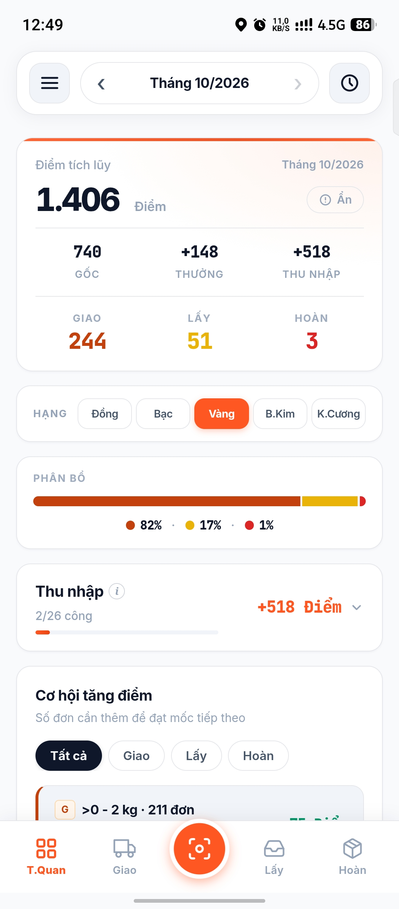
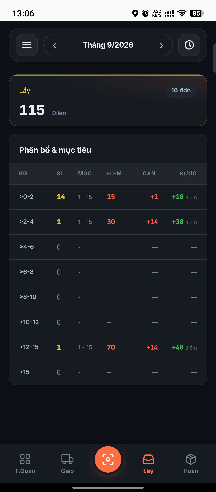
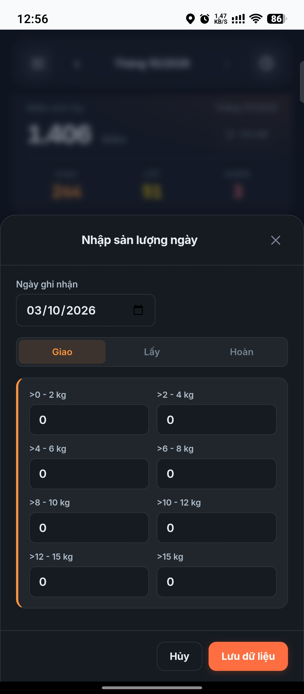
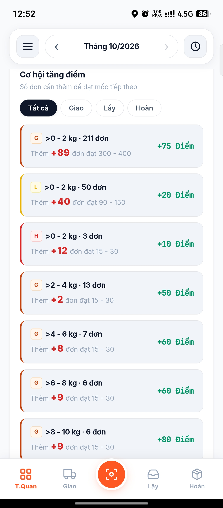
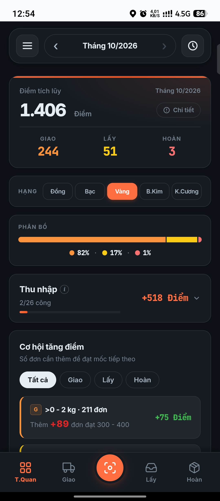

✅ Lợi ích khi cài
Mở nhanh như app thật · Chạy toàn màn hình · Tự cập nhật khi có bản mới
3
Tổng quan giao diện
🎨

Màn hình Tổng quan — tab T.Quan
🧭 5 Tab chính
Tab
Chức năng
T.Quan
Tổng điểm, 3 loại đơn, cơ hội tăng điểm
Giao
Chi tiết bảng 8 dải khối lượng Giao
📷 (giữa)
Quét ảnh OCR
Lấy
Chi tiết bảng 8 dải Lấy
Hoàn
Chi tiết bảng 8 dải Hoàn

Tab Lấy — chi tiết 8 dải khối lượng
4
Bắt đầu nhanh
🚀
Bước 1 — Chọn khu vực + nhập lương
1. Vào tab T.Quan → mở Thu nhập
2. Chọn Khu vực: Miền hoặc TP.HCM & HN
3. Nhập LCB, Bưu cục, Tài xế của tháng hiện tại
4. Bấm "Lưu cấu hình tháng này"
Bước 2 — Chọn hạng thưởng
1. Vào mục Hạng ở tab T.Quan
2. Bấm pill hạng của bạn (VD: Vàng)
3. Hạng sẽ được lưu riêng cho tháng đang xem
Bước 3 — Nhập sản lượng hôm nay
Cách 1 (nhanh): Bấm 📷 ở giữa → chọn ảnh chụp màn hình SPX
Cách 2 (thủ công): Menu ☰ → Nhập sản lượng
Bước 4 — Xem kết quả
Quay về T.Quan → xem tổng điểm đã cập nhật
5
Nhập sản lượng
📝
📷 Cách 1: Quét ảnh OCR (khuyến nghị)
Chuẩn bị ảnh:
Mở app SPX → vào màn hình "Chi tiết đơn theo ngày"
Chụp màn hình (nguồn + volume down)
Có thể chụp nhiều ảnh cùng lúc
Quét:
Mở SPX Tracker → bấm 📷 giữa bottom nav
Chọn 1 hoặc nhiều ảnh cùng lúc
Đợi 5-15s → app tự nhận diện
Nếu conf ≥85% + tổng khớp → tự động lưu ✅
Nếu cần check → hiện modal để đối chiếu
🎨 Màu viền ô khi cần check
🟢 Xanh = tin cậy cao · 🟡 Vàng = cần xem lại · 🔴 Đỏ = phải sửa tay
🟠 Cam = phân bố bất thường (số vô lý — vd: dải 0-2 quá thấp)
⚠️ Cảnh báo phân bố tự động (v50.6+)
App tự kiểm tra 5 quy luật để phát hiện OCR đọc nhầm dải:
• Dải 0-2 phải chiếm ≥ 50%
• Dải 0-2 ≥ dải 2-4 ≥ dải 4-6 (không bất thường gấp nhiều lần)
• Không dải nào cao gấp > 5× dải 0-2
• 3 dải nhỏ (0-2 + 2-4 + 4-6) ≥ 70% tổng
Nếu vi phạm → app KHÔNG tự động lưu, hiện banner cam + đánh dấu ô nghi ngờ. Bạn phải đối chiếu ảnh gốc rồi mới lưu.
✏️ Cách 2: Nhập tay
Menu ☰ → Nhập sản lượng → chọn ngày + nhập 8 dải:

Modal nhập sản lượng — 8 dải khối lượng
Chọn Ngày ghi nhận (mặc định hôm nay)
Chuyển tab Giao / Lấy / Hoàn
Nhập số đơn cho 8 dải khối lượng
Bấm Lưu dữ liệu
💡 Mẹo nhập nhanh
Ô nhập có tự xóa số 0 khi chạm vào — nhập nhanh hơn.
🚫 Báo lỗi trùng lặp
Nếu báo "Đã tồn tại bản ghi với CÙNG số liệu" → ngày đó đã nhập rồi. Muốn sửa → vào Nhật ký → Sửa.
📚 Quét nhiều ảnh cùng lúc
Bấm 📷 → chọn nhiều ảnh (Chrome cho ~10-20 ảnh)
App xử lý tuần tự
Ảnh tự lưu → ảnh cần check → hiện danh sách Batch
Trong Batch: bấm 📝 Nhập từng ảnh để check
Hoặc Lưu tất cả để lưu những ảnh đã pass
6
Thu nhập & hạng theo tháng
💰
⚡ Đặc biệt quan trọng (v50.8.0)
Cả Lương và Hạng thưởng đều lưu RIÊNG theo từng tháng. Đổi tháng → tự động chuyển sang cấu hình tháng đó.
💡 Ví dụ
Tháng 9/2026: LCB 10tr, BC 2tr, TX 1tr + Hạng K.Cương
Tháng 10/2026: LCB 12tr, BC 2tr, TX 1tr + Hạng Vàng
Mỗi tháng độc lập — không ảnh hưởng nhau.
📝 Nhập config cho 1 tháng
Chọn tháng muốn nhập (dùng ‹ › ở header)
Thu nhập: mở mục Thu nhập → nhập LCB/BC/TX → Lưu
Hạng: bấm pill hạng tương ứng — tự lưu vào tháng đó
Chuyển tháng khác → thấy cấu hình tự đổi theo tháng mới ✅
🌍 Khu vực — không theo tháng
Khu vực (Miền / TP.HCM & HN) là thuộc tính nhân viên — chọn 1 lần, áp dụng cho tất cả tháng.
📐 Công thức
Lương 1 công = (LCB + Bưu cục + Tài xế) / ngày tối đa
Số ngày tối đa:
• Tháng 2 = 24
• Tháng khác = 26
Số công = Đếm ngày có:
Giao + (Lấy / 6) + Hoàn ≥ ngưỡng
• Miền: ≥60 = 1 công, ≥30 = 0.5 công
• HCM/HN: ≥80 = 1 công, ≥40 = 0.5 công
Tích lũy = Lương 1 công × Số công
Thưởng = Gốc × %hạng
Tổng điểm = Gốc + Thưởng + Tích lũy
7
Đọc hiểu dữ liệu
📊
🎯 Hero (tab T.Quan)
1.479 Điểm
Gốc: +1.100 Điểm ← điểm từ đơn hàng
Thưởng: +220 Điểm ← bonus theo hạng tháng này
TN: +159 Điểm ← thu nhập tháng này
Bấm ⓘ Chi tiết để mở 3 metrics này.
📊 Hero Tiles
GIAO LẤY HOÀN
301 16 1
Tổng số đơn trong tháng đang xem.
📋 Bảng chi tiết (tab Giao/Lấy/Hoàn)
Cột
Ý nghĩa
KG
Dải khối lượng
SL
Số đơn đã giao/lấy/hoàn
MỐC
Mốc điểm hiện tại (VD: 200-300)
ĐIỂM
Điểm được hưởng với mốc này
CẦN
Cần thêm bao nhiêu đơn để lên mốc tiếp
ĐƯỢC
Được thêm bao nhiêu điểm khi lên mốc
📖 Ví dụ đọc bảng
KG SL MỐC ĐIỂM CẦN ĐƯỢC
>0-2 273 200-300 275 +27 +75 điểm
→ Bạn có 273 đơn dải >0-2 → hiện được 275 điểm
→ Thêm 27 đơn nữa → lên mốc tiếp → +75 điểm
🎯 Cơ hội tăng điểm
Liệt kê mọi dải bạn có thể tăng điểm — sắp xếp theo hiệu quả:

Mục "Cơ hội tăng điểm" — gợi ý ưu tiên
💡 Mẹo tối ưu
Ưu tiên dải có +CẦN nhỏ mà +ĐƯỢC lớn → tăng điểm hiệu quả nhất.
8
Chọn kỳ xem (tháng)
📅
🧭 Header cluster
[‹] Tháng 10/2026 [›]
Nút
Chức năng
‹
Lùi 1 tháng
Label giữa
Chạm mở bộ chọn tháng
›
Tiến 1 tháng
🕰 (góc phải)
Nhảy về tháng có dữ liệu gần nhất
☰ (góc trái)
Mở Menu
📅 Giới hạn
Lùi tối đa: Tháng 1/2020
Tiến tối đa: Tháng hiện tại (không vượt tương lai)
💡 Mẹo
Muốn xem tháng 3 → bấm 🕰 để nhảy nhanh.
Muốn xem tháng xa → bấm label giữa → chọn từ picker.
9
Hạng thưởng
🏆
⚡ Lưu theo từng tháng (v50.8.0)
Hạng được lưu riêng cho tháng đang xem. Chuyển tháng → pill hạng tự động đổi theo tháng đó.
Hạng
Bonus
Chuẩn (không chọn)
+0%
Đồng
+10%
Bạc
+15%
Vàng
+20%
Bạch Kim
+22%
Kim Cương
+26%
🎯 Cách chọn
Chạm 1 lần vào pill → chọn hạng cho tháng đang xem
Nhấn giữ 0.5s pill đang active → bỏ chọn (về Chuẩn)
Chuyển tháng khác → pill tự đổi theo hạng của tháng đó
🆕 v50.8.0 — Nạp không mất data
Trước đây: nạp file → ghi đè luôn.
Giờ đây: nếu app đang có data → app hỏi bạn muốn GHI ĐÈ hay THÊM VÀO.
Chọn Cancel để giữ nguyên dữ liệu hiện tại + thêm mới từ file (bỏ qua bản ghi trùng).
🔄 Phục hồi tự động (Vault)
App tự lưu bản sao vào localStorage mỗi lần đổi data. Nếu mất data local → bấm 🔄 Phục hồi tự động.
12
Cài đặt khác
⚙️
🌙 Chế độ tối
Menu ☰ → Chế độ tối → chuyển sang giao diện tối

Giao diện Dark mode — tab T.Quan
🔄 Cập nhật app (v50.7.2+)
App tự kiểm tra bản mới mỗi 5 phút. Khi có bản mới → hiện banner cam ở dưới màn hình: